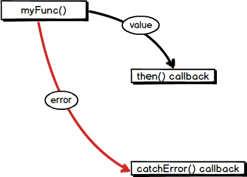

Futures and Error Handling
Written by Shailen Tuli
March 2013 (updated May 2013)
This article covers the subject of error handling when dealing with Futures. If you are unfamiliar with the general concepts behind Futures, we recommend you first read Using Future Based APIs.
Introduction
A Future represents a deferred computation. Receivers of a Future can register callbacks that handle the value or the error that completes a Future:
myFunc().then(processValue)
.catchError(handleError);
The registered callbacks fire based on the following rules: then()’s
callback fires if it is invoked on a Future that completes with a value;
catchError()’s callback fires if it is invoked on a Future that completes
with an error.
In the example above, if myFunc()’s Future completes with a value,
then()’s callback fires. If no new error is produced within then(),
catchError()’s callback does not fire. On the other hand, if myFunc()
completes with an error, then()’s callback does not fire, and
catchError()’s callback does.

Examples of using then() with catchError()
Chained then() and catchError() invocations are a common pattern when
dealing with Futures, and can be thought of as the rough equivalent of
try-catch blocks.
The next few sections give examples of this pattern.
catchError() as a comprehensive error handler
The following example deals with throwing an exception from within then()’s
callback and demonstrates catchError()’s versatility as an error handler:
myFunc()
.then((value) {
doSomethingWith(value);
...
throw("some arbitrary error");
})
.catchError(handleError);
If myFunc()’s Future completes with a value, then()’s callback fires. If
code within then()’s callback throws (as it does in the example above),
then()’s Future completes with an error. That error is handled by
catchError().
If myFunc()’s Future completes with an error, then()’s Future completes
with that error. The error is also handled by catchError().
Regardless of whether the error originated within myFunc() or within
then(), catchError() successfully handles it.
Error handling within then()
For more granular error handling, you can register a second (onError)
callback within then() to handle Futures completed with errors. Here is
then()’s signature:
abstract Future then(onValue(T value), {onError(AsyncError asyncError)})
Register the optional onError callback only if you want to differentiate
between an error forwarded to then(), and an error generated within
then():
funcThatThrows()
.then(successCallback, onError: (e) {
handleError(e); // Original error.
anotherFuncThatThrows(); // Oops, new error.
})
.catchError(handleError); // Error from within then() handled.
In the example above, funcThatThrows()’s Future’s error is handled with the
onError callback; anotherFuncThatThrows() causes then()’s Future to
complete with an error; this error is handled by catchError().
In general, implementing two different error handling strategies is not
recommended: register a second callback only if there is a compelling reason
to catch the error within then().
Errors in the middle of a long chain
It is common to have a succession of then() calls, and catch errors
generated from any part of the chain using catchError():
Future<String> one() => new Future.value("from one");
Future<String> two() => new Future.error("error from two");
Future<String> three() => new Future.value("from three");
Future<String> four() => new Future.value("from four");
void main() {
one() // Future completes with "from one".
.then((_) => two()) // Future completes with two()'s error.
.then((_) => three()) // Future completes with two()'s error.
.then((_) => four()) // Future completes with two()'s error.
.then((value) => processValue(value)) // Future completes with two()'s error.
.catchError((e) {
print("Got error: ${e.error}"); // Finally, callback fires.
return 42; // Future completes with 42.
})
.then((value) {
print("The value is $value");
});
}
// Output of this program:
// Got error: error from two
// The value is 42
In the code above, one()’s Future completes with a value, but two()’s
Future completes with an error. When then() is invoked on a Future that
completes with an error, then()’s callback does not fire. Instead,
then()’s Future completes with the error of its receiver. In our example,
this means that after two() is called, the Future returned by every
subsequent then()completes with two()’s error. That error is finally
handled within catchError().
Handling specific errors
What if we want to catch a specific error? Or catch more than one error?
catchError() takes an optional named argument, test, that
allows us to query the kind of error thrown.
abstract Future catchError(onError(AsyncError asyncError), {bool test(Object error)})
Consider handleAuthResponse(params), a function that authenticates a user
based on the params provided, and redirects the user to an appropriate URL.
Given the complex workflow, handleAuthResponse() could generate various
errors and exceptions, and you should handle them differently. Here’s
how you can use test to do that:
void main() {
handleAuthResponse({'username': 'johncage', 'age': 92})
.then((_) => ...)
.catchError(handleFormatException,
test: (e) => e is FormatException)
.catchError(handleAuthorizationException,
test: (e) => e is AuthorizationException);
}
Async try-catch-finally using whenComplete()
If then().catchError() mirrors a try-catch, whenComplete() is the
equivalent of ‘finally’. The callback registered within whenComplete() is
called when whenComplete()’s receiver completes, whether it does so with a
value or with an error:
var server = connectToServer();
server.post(myUrl, fields: {"name": "john", "profession": "juggler"})
.then(handleResponse)
.catchError(handleError)
.whenComplete(server.close);
We want to call server.close regardless of whether server.post() produces
a valid response, or an error. We ensure this happens by placing it inside
whenComplete().
Completing the Future returned by whenComplete()
If no error is emitted from within whenComplete(), its Future completes
the same way as the Future that whenComplete() is invoked on. This is
easiest to understand through examples.
In the code below, then()’s Future completes with an error, so
whenComplete()’s Future also completes with that error.
void main() {
funcThatThrows()
.then((_) => print("Won't reach here...")) // Future completes with an error.
.whenComplete(() => print("... or here...")) // Future completes with the same error.
.then((_) => print("... nor here.")) // Future completes with the same error.
.catchError(handleError) // Error is handled here.
}
In the code below, then()’s Future completes with an error, which is now
handled by catchError(). Because catchError()’s Future completes with
someObject, whenComplete()’s Future completes with that same object.
void main() {
funcThatThrows()
.then((_) => ...) // Future completes with an error.
.catchError((e) {
handleError(e);
printErrorMessage();
return someObject;
}) // Future completes with someObject.
.whenComplete(() => print("Done!")); // Future completes with someObject.
}
Errors originating within whenComplete()
If whenComplete()’s callback throws an error, then whenComplete()’s Future
completes with that error:
void main() {
funcThatThrows()
.catchError(handleError) // Future completes with a value.
.whenComplete(() => throw "new error") // Future completes with an error.
.catchError(handleError); // Error is handled.
}
Potential problem: failing to register error handlers early
It is crucial that error handlers are installed before a Future completes: this avoids scenarios where a Future completes with an error, the error handler is not yet attached, and the error accidentally propagates. Consider this code:
void main() {
Future future = funcThatThrows();
// BAD. Too late to handle funcThatThrows() exception.
new Future.delayed(const Duration(milliseconds: 500), () {
future.then(...)
.catchError(...);
});
}
In the code above, catchError() is not registered until half a second after
funcThatThrows() is called, and the error goes unhandled.
The problem goes away if funcThatThrows() is called within the
Future.delayed() callback:
void main() {
new Future.delayed(const Duration(milliseconds: 500), () {
funcThatThrows().then(processValue)
.catchError(handleError)); // We get here.
});
}
Potential problem: accidentally mixing synchronous and asynchronous errors
Functions that return Futures should almost always emit their errors in the future. Since we do not want the caller of such functions to have to implement multiple error-handling scenarios, we want to prevent any synchronous errors from leaking out. Consider this code:
Future<int> parseAndRead(data) {
var filename = obtainFileName(data); // Could throw.
File file = new File(filename);
return file.readAsString().then((contents) {
return parseFileData(contents); // Could throw.
});
}
Two functions in that code could potentially throw synchronously:
obtainFileName() and parseFileData(). Because parseFileData() executes
inside a then() callback, its error does not leak out of the function.
Instead, then()’s Future completes with parseFileData()’s error, the error
eventually completes parseAndRead()’s Future, and the error can be
successfully handled by catchError().
But obtainFileName() is not called within a then() callback; if it
throws, a synchronous error propagates:
void main() {
parseAndRead(data).catchError((e) {
print("inside catchError");
print(e.error);
});
}
// Program Output:
// Unhandled exception:
// <error from obtainFileName>
// ...
Because using catchError() does not capture the error, a client of
parseAndRead() would implement a separate error-handling strategy for this
error.
Solution: Using Future.sync() to wrap your code
A common pattern for ensuring that no synchronous error is accidentally
thrown from a function is to wrap the function body inside a new Future.sync()
callback:
Future<int> parseAndRead(data) {
return new Future.sync(() {
var filename = obtainFileName(data); // Could throw.
File file = new File(filename);
return file.readAsString().then((contents) {
return parseFileData(contents); // Could throw.
});
});
}
If the callback returns a non-Future value, Future.sync()’s Future completes
with that value. If the callback throws (as it does in the example
above), the Future completes with an error. If the callback itself returns a
Future, the value or the error of that Future completes Future.sync()’s
Future.
With code wrapped within Future.sync(), catchError() can handle all errors:
void main() {
parseAndRead(data).catchError((e) {
print("inside catchError");
print(e.error);
});
}
// Program Output:
// inside catchError
// <error from obtainFileName>
Future.sync() makes your code resilient against uncaught exceptions. If your
function has a lot of code packed into it, chances are that you could be doing
something dangerous without realizing it:
Future fragileFunc() {
return new Future.sync(() {
var x = someFunc(); // Unexpectedly throws in some rare cases.
var y = 10 / x; // x should not equal 0.
...
});
}
Future.sync() not only allows you to handle errors you know might occur, but
also prevents errors from accidentally leaking out of your function.
More information
Read the following documentation for more details on using Futures:
- The Event Loop and Dart, an article that describes how to schedule tasks using Futures
- Future API reference